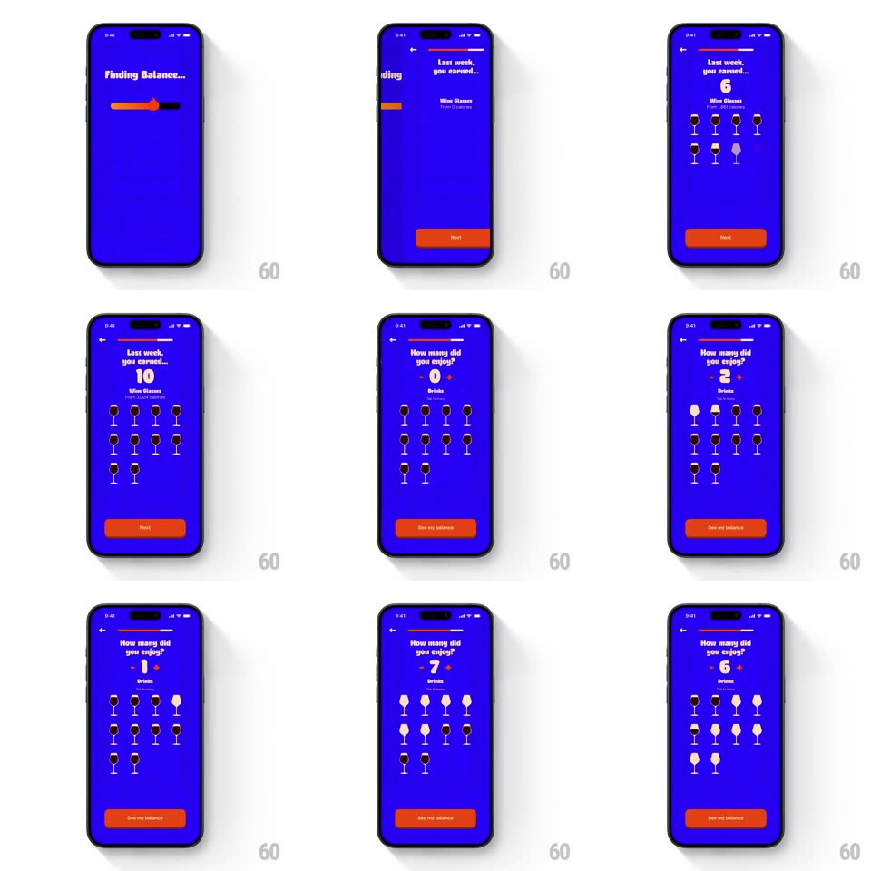

Media
Frame-by-frame

Rebuild this animation 1:1: BurnBar's weekly recap - a cheeky loading bar ("Pouring Drinks...", "Finding Balance..."), then your earned wine glasses revealed one icon at a time, then the "How many did you enjoy?" counter filling a glass grid.

Rebuild this animation 1:1: BurnBar's weekly recap - a cheeky loading bar ("Pouring Drinks...", "Finding Balance..."), then your earned wine glasses revealed one icon at a time, then the "How many did you enjoy?" counter filling a glass grid.
## Integration
Integration: stack-agnostic spec - springs given as stiffness/damping, timed motions as duration + curve; map every value to your framework and animation library of choice.
## Scene
A saturated blue field with red/orange accents. Loading: "Pouring Drinks..." over a thick progress bar, then "Finding Balance...". Recap: "Last week, you earned..." with a big count ("10"), "Wine Glasses", "From 1,361 calories", rows of wine-glass icons (one dark/filled per earned glass, the rest pale), and a red Next button. Counter: "How many did you enjoy?" with - and + flanking a big number, a 3-row grid of glasses, and a "See my balance" button.
## Motion spec
Pattern: loading bar into staggered icon reveal into an interactive counter that fills a glass grid.
- The loading bar fills in two characterful passes ("Pouring Drinks..." fills left to right in 900ms; the label swaps and the bar refills in 700ms) - the joke is the wait.
- Recap reveal: the count rolls up (0 -> 10, 700ms, ease-out), then the glass icons pop in one at a time (scale 0.6 -> 1.15 -> 1, spring ~400/14, 60ms apart, row by row) as filled dark glasses.
- Counter: tapping +/- rolls the number (vertical digit flip, 200ms, direction by sign) and the grid updates live - glasses toggle filled/pale with a tiny pop (scale 1 -> 1.2 -> 1, 180ms) at the exact grid position matching the new count.
- The grid fills in reading order; draining removes the most recent glass - the count and the grid can never disagree.
- "See my balance" sits enabled throughout - the counter is honest self-report, not a gate.
## Calibration
- The palette is loud (blue field, red buttons) - the motion matches: quick pops, playful springs, no slow eases.
- The loading copy swaps at least twice - one label is not a bit, two is a bit.
## Reduced motion
Bar fills without label swaps; icons and number fade in place.
## Don't miss
- Earned glasses are dark-filled, unearned stay pale outlines - the grid is the tally, not decoration.
- "From N calories" rides under the count - the app always ties drinks to burn.